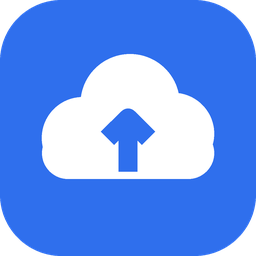

Windows · Windows Server

Backupchik
Резервное копирование папок и целых дисков в Google Диск, Яндекс.Диск и Облако Mail.Ru по расписанию. Загружает только новые и изменённые файлы, проверяет каждый по контрольным суммам, докачивает после сбоя и умеет работать как служба Windows.
Скоро…
Здесь появятся следующие проекты.